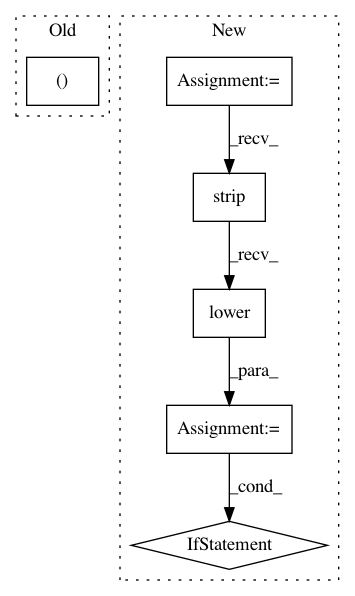

153922d673a20ab6198ccfa46bba2eb938f4fd42,reframe/frontend/printer.py,PrettyPrinter,status,#PrettyPrinter#Any#Any#Any#Any#,37
Before Change
else:
status = color.colorize(status, color.GREEN)
logging.getlogger().log(level, "[ %s ] %s" % (status, message))
def timestamp(self, msg="", separator=None):
msg = "%s %s" % (msg, datetime.datetime.today().strftime("%c %Z"))
After Change
else:
status = status.ljust(self.status_width - 2)
original_status = status
if self.colorize:
status_stripped = status.strip().lower()
if status_stripped == "skip":
status = color.colorize(status, color.YELLOW)
elif status_stripped in ["fail", "failed", "error"]:
status = color.colorize(status, color.RED)
else:
status = color.colorize(status, color.GREEN)
final_msg = f"[ {status} ] "
status_stripped = original_status.strip().lower()
if status_stripped in ["ok", "skip", "fail", "failed", "error"]:
self._progress_count += 1
final_msg += f"({self._progress_count}/{self._total_count}) "
final_msg += message
logging.getlogger().log(level, final_msg)
def timestamp(self, msg="", separator=None):
In pattern: SUPERPATTERN
Frequency: 3
Non-data size: 6
Instances
Project Name: eth-cscs/reframe
Commit Name: 153922d673a20ab6198ccfa46bba2eb938f4fd42
Time: 2020-03-18
Author: eirini.koutsaniti@cscs.ch
File Name: reframe/frontend/printer.py
Class Name: PrettyPrinter
Method Name: status
Project Name: biolab/orange3
Commit Name: 8d4d199c35f5163ed21ae705a16ce3c8548d60c6
Time: 2012-11-28
Author: janez.demsar@fri.uni-lj.si
File Name: Orange/data/io.py
Class Name: BasketReader
Method Name: prescan_file
Project Name: idaholab/raven
Commit Name: 673784335c74113b7518ec774e71b0fd086f9a89
Time: 2018-07-16
Author: paul.talbot@inl.gov
File Name: scripts/TestHarness/testers/RavenFramework.py
Class Name: RavenFramework
Method Name: checkRunnable